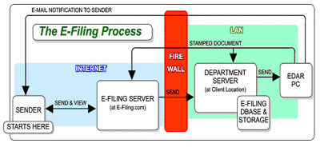

<div class="content">

    <div class="horizontal_divider">
        <div class="row">
            <div>
                
            </div>
        </div>
        <div class="row bgcolorrow">
            <h1>Company Profile</h1>
            <div class="col-sm-7 textjustify">
                <p>E-Filing.com is a corporation headquartered in Santa Barbara, California that began operation in
                    September of 1999. E-Filing offers state-of-the-art technology that allows attorneys to process
                    important legal documents electronically online. Filing cases electronically reduces the cost of
                    filing
                    drastically; eliminating much of the paper handling involved, and allows the courts to function more
                    efficiently. In addition, E-Filing.com's electronic filing process makes it possible for documents
                    to be
                    submitted to the courts twenty-four hours a day from any location with Internet access.
                </p>
                <p>Electronic commerce has created ways of converting the conventional buying process into a web based
                    electronic buying process that can be performed online, replacing the cashier's window you find at
                    the
                    store with an electronic window you can access through your web browser. If you've ever purchased
                    merchandise online, you've used an electronic window to place the order. E-Filing has applied this
                    concept to the process of court filings with the use of its Electronic Document Acceptance and
                    Routing
                    System (EDAR) Patented technology..
                </p>
                <p>EDAR allows interactive communication between the filer and the court through an electronic window.
                    Legal
                    documents can be submitted, fees collected, and approved by the clerk of the court through the
                    electronic window. Once the clerk of the court has approved the filing, it is given an electronic
                    stamp
                    of approval and an email is sent to the filer confirming approval of the document.</p>
                <p>Existing court staff members can use an electronic filing system. Staff training to implement this
                    system
                    is minimal - just 15 to 30 minutes to learn the basic functions of the software and the electronic
                    stamping process. The electronic window performs essentially the same functions as the conventional
                    filing system, only information normally stored on paper documents is now stored in the system and
                    the
                    traditional method for stamping documents received is replaced by an electronic stamp.</p>
                <p>E-Filing.com has adopted legal XML (eXtensive Markup Language) standards to create a generalized
                    electronic filing system that can be integrated with various court case management systems. Using a
                    standard web browser, attorneys can access all the required forms, fill them out, and attach any
                    additional files that need to be included. The documents are placed in an electronic "data envelope"
                    customized to meet the requirements of the court where your case is being filed. The "data envelope"
                    will accept documents in a wide variety of formats, including Microsoft Word (all versions),
                    WordPerfect
                    (all versions), PDF, and TIFF formats.</p>
                <p>With the click of the mouse, the case is sent directly to the clerk of the court over a secure
                    channel
                    that is protected by 128bit encryption-the highest level of encryption available. After the case has
                    been accepted, it is digitally stamped and sent to one of our affiliated process servers, or to the
                    filer's choice of process servers to perfect service. Court fees are pre-programmed into the system
                    and
                    are paid directly to the courts when the documents are filed.</p>
                <span>
                    
                </span><br>
                <p>CIO Magazine named E-Filing.com a 50/50 winner in 1999 for online excellence in business.</p><br>
                <p>Proven to deliver documents fast and secure, E-Filing.com is the shortest distance between justice
                    and
                    the defendant.
                </p>
            </div>
            <div class="col-sm-2">
                our clients<br>
                
            </div>

            <div class="col-sm-3">
                asscociate sites<br>
                
                <a href="">
                    www.clerkePass.com</a><br>
                <a href="">www.imagexx.com</a>
                <!--  -->
            </div>

            <div class="row pdftop">
                <div class="col-sm-6">
                    <br>
                    <a href="">Adobe Acrobat Reader v6.0</a>
                </div>
            </div>
        </div>

    </div>
</div>